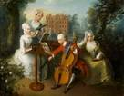
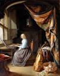
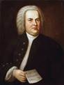
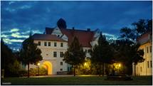

Johan Sebastian Bach
1. Biografija skladatelja
Johann Sebastian Bach (1685. – 1750.)
bio je njemački skladatelj i orguljaš razdoblja baroka, čije je stvaralaštvo doseglo vrhunac u složenosti kontrapunkta, harmonije i oblika. Rođen je u Eisenachu u glazbenoj obitelji.Gotovo svi muški članovi bili su glazbenici. Bach je djelovao u više njemačkih gradova, između ostalog u Weimaru, Köthenu i Leipzigu, gdje je proveo najveći dio života kao kantor crkve sv. Tome (Thomaskirche). Njegov opus obuhvaća sakralnu i svjetovnu glazbu, a posebno se ističu Brandenburški koncerti, Misa u h-molu, Umijeće fuge, Dobro ugođeni klavir i brojne kantate. Bachova glazba sintetizira tehniku i izražajnost, povezujući matematičku preciznost s dubokom duhovnošću. Njegov utjecaj proteže se sve do današnjih dana bio je uzor mnogim skladateljima, od Mozarta do Beethovena i dalje.
2. Analiza glazbenog djela
🎼 Naziv skladbe:
Brandenburški koncert br. 3 u G-duru, BWV 1048
🎵 Glazbena vrsta:
Koncert grosso (koncert za skupinu instrumenata i orkestar)
🎶 Broj stavaka i tempo: 1.Allegro
2.Adagio (kratki prijelazni stavak)
3.Allegro
🎻 Izvođački sastav: 3 violine
3 viole
3 violončela continuo (čembalo i kontrabas)
🎵 Glazbeni slog i značajke:
Prvi stavak (Allegro):
Tempo: Brz i energičan
Dinamika: Kontrastna, s izmjenama između skupina instrumenata
Melodija: Temeljena na motivima koji se razvijaju kroz imitacije.
Tonska građa: G-dur, česte modulacije u srodne tonove
Stil: Tipična barokna polifonija s jasno istaknutom ritamskom energijom
Drugi stavak (Adagio):
Tempo:Spor, ali u ovom koncertu zapravo sveden na kratki harmonijski završetak između dva brza stavka
Melodija: Često improvizirana čembalom
Slog: Lirski, introspektivan prijelaz
Treći stavak (Allegro):
Tempo: Vrlo živahan, plesnog karaktera
Dinamika: Živahna izmjena glasno-tihih dijelova
Melodija: Ritmički impluzivna s ponavljanjima i imitacijama među instrumentima Slog: višeglasan,polifonijski izrađen
🎧 Poveznica na slušni primjer: YouTube – Bach: Brandenburg Concerto No. 3 in G Major, BWV 1048 (Academy of St. Martin in the Fields)
https://www.youtube.com/watch?v=pdsyNwUoON0
3. Osobni doživljaj skladbe
Ova skladba ostavlja dojam savršene ravnoteže između reda i živosti. Prvi stavak me podsjeća na ritam života zbog stalnog kretanje i izmjene energije, dok kratki drugi stavak donosi trenutak mira i promišljanja. Treći stavak vraća radost i plesni zanos, gotovo kao slavlje života. Bachova glazba ovdje pokazuje koliko emocija može proizaći iz čiste strukture.
4. Likovna i kulturna povezanost
🎨 Umjetničke slike:
"The Music Party" – Philip Mercier (oko 1733.) Prikazuje barokne glazbenike u salonu, u duhu društvenih okupljanja sličnih onima u kojima su se izvodila Bachova djela.

"A Concert" – Gerrit Dou (oko 1650.) Prikazuje glazbenike okupljene oko čembala, tipičan prizor iz baroknog doma.

Portret skladatelja: "Johann Sebastian Bach" – Elias Gottlob Haussmann (1746.) Najpoznatiji portret Bacha, prikazuje ga s notnim zapisom „Canon triplex“.

Barokna palača povezana s Bachom: Dvorac Köthen (Schloss Köthen) – mjesto gdje je Bach služio kao kapelnik kneza Leopolda od Anhalta-Köthena. Tamo je nastao niz instrumentalnih djela, uključujući Brandenburške koncerte. Palača je simbol raskoši i kulture baroknog dvora, u kojem je glazba imala važnu ulogu.

5. Korelacija s poviješću, filozofijom i umjetnošću
Barokno razdoblje obilježeno je kontrastima svjetlo i tama, pokret i mir, red i emocija. U filozofiji to se poklapa s razmišljanjima Descartesa, koji je naglašavao razumnost i jasnoću, ali i s religioznim nagonom da se izrazi duhovna dubina. U likovnoj umjetnosti baroka vidimo slične principe kod Caravaggia i Rubensa, koji koriste svjetlo i sjenu za postizanje dramatičnog izraza kao što Bach u glazbi koristi harmoniju.
6. Popis literature
Internet Archive: Digitalna biblioteka besplatnih i posuđenih tekstova, filmova, glazbe i wayback stroja : Bukofzer, M. F. Music in the Baroque Era
New York: Norton, 1947.
Schulenberg, D. The Music of J. S. Bach: Analysis and
Interpretation
Boyd, M. Bach. Oxford University Press, 2000.
Online izvori: www.bach-digital.de www.britannica.com/biography/Johann-Sebastian-Bach
YouTube: Academy of St. Martin in the Fields – Brandenburg Concerto No. 3
Izvori slika: https://www.fotocommunity.de/photo/das-schloss-in-koethen- carsten-hellwig/44937035
https://www.pinterest.fr/pin/27584616446704590/
https://www.npg.org.uk/collections/search/portrait/mw00125/The-Music-Party
Enna Tkalčec,2.a